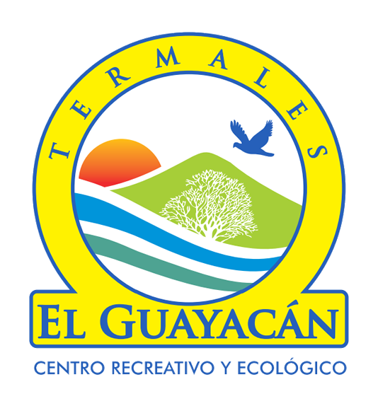

📸 Canopy sobre las fumarolas
Canopy
Tirolesa de 250 m sobre las fumarolas volcánicas, hasta dos veces, con el volcán en el horizonte.

Fortuna de Bagaces · Guanacaste, Costa Rica
Aguas volcánicas sin cloro, canopy, senderos y hospedaje. Abierto todos los días de 8am a 9pm.
Menores de 3 años gratis.
Incluye piscinas, tobogán, miradores, ranchos, puente colgante, tour de hornillas, baños de arcilla, senderos y WiFi.
Reservar por WhatsAppIncluye desayuno, uso de todas las instalaciones, TV cable, aire acondicionado, baño privado y WiFi. Villas con cocina disponibles.
Consultar disponibilidadDiez piscinas de aguas carbonatadas y mineralizadas del Volcán Miravalles, más dos de agua fría — todas sin cloro.
Profundidades de 75 cm a 2 m, para todas las edades.
El contraste perfecto, frío y calor.
Diversión para toda la familia.
Con parrilla. Traé tu comida sin costo (no vidrio).
Tirolesa de 250 m sobre las fumarolas volcánicas, hasta dos veces, con el volcán en el horizonte.
Sendero a los respiraderos del Miravalles. Barro volcánico natural y mirador privilegiado.
Puente colgante y observación de tucanes, pericos, tejones y armadillos en su hábitat.
Cocina criolla costarricense en ambiente familiar, opciones rápidas, cócteles y bebidas.
Despertá en el bosque tropical con el Miravalles como vista. Desayuno y acceso completo incluidos.
No. El pase del día no requiere reserva: llegás directamente de 8am a 9pm, todos los días. Para hospedaje sí conviene consultar disponibilidad por WhatsApp.
Sí, sin costo adicional. Hay +30 ranchos, muchos con parrilla. No se permiten envases de vidrio.
No. Son aguas volcánicas carbonatadas del Miravalles; los minerales naturales mantienen el agua limpia sin químicos.
Sí. Hay piscinas desde 75 cm. Niños 3–10 y adultos mayores con tarifa reducida; menores de 3 gratis. Acceso para movilidad reducida.
Sí, amplio y gratuito.
Desde Liberia: Ruta 1 al sur hasta Bagaces, luego hacia Fortuna de Bagaces.
Desde Fortuna de Bagaces, 5 km al noroeste rumbo al Volcán Miravalles.
Seguí los rótulos de Termales El Guayacán. Amplio parqueo gratuito.
Reservas y consultas directo con nosotros, de 8am a 9pm todos los días.
WhatsApp +506 8849-2812